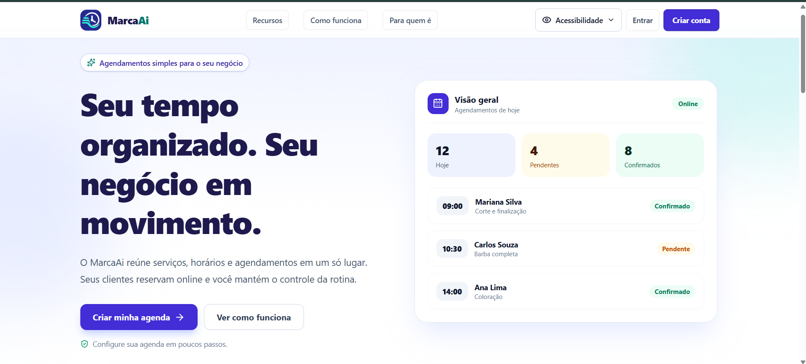
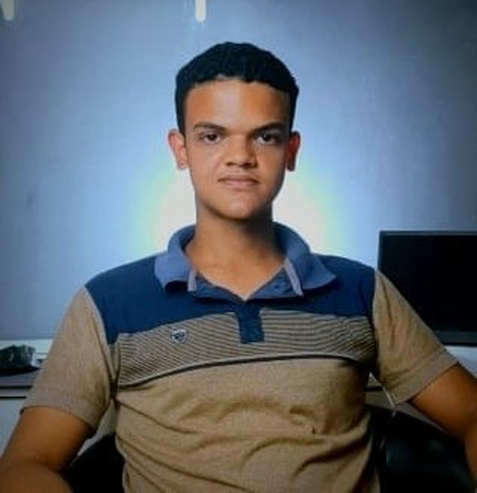
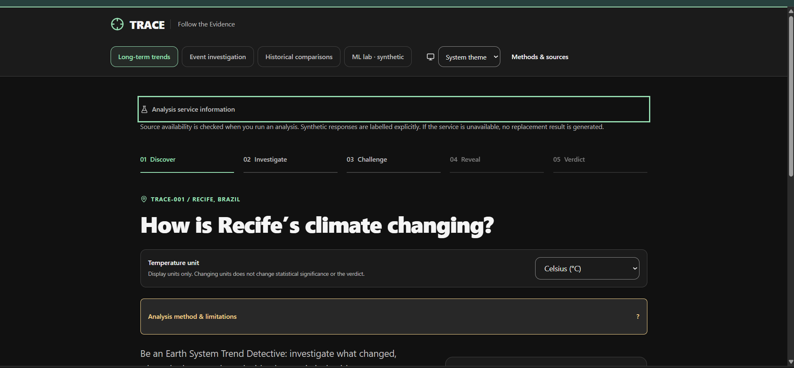
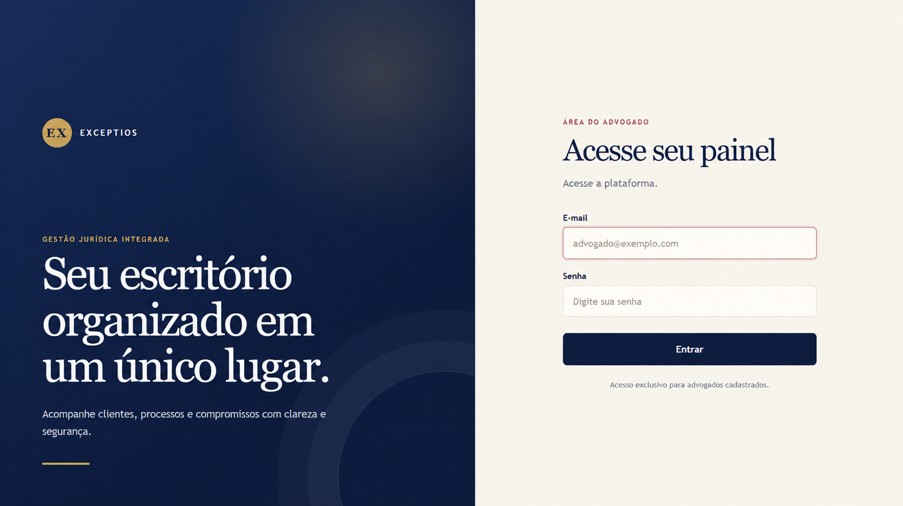

01 / No ar · SaaS
MarcaAi
Agendamento online e gestão de horários para profissionais e estabelecimentos de serviços.

Sou Kauan, criador do Código Prático. Transformo curiosidade em experiências digitais e ideias em produtos.

Projetos que conectam tecnologia, curiosidade e vontade de resolver problemas reais.
Ver todos os projetos ↗Agendamento online e gestão de horários para profissionais e estabelecimentos de serviços.

Explore evidências climáticas e eventos históricos de Recife a partir de dados e documentação científica.

Um projeto em construção. Mais detalhes serão compartilhados quando estiverem disponíveis.

Tudo começa com uma pergunta. O próximo passo é colocar a mão na massa.
Observar, fazer perguntas e enxergar possibilidades onde existe um problema.
Testar caminhos, aprender com a prática e ajustar o que for preciso.
Dar forma ao que funciona e transformar o aprendizado em algo útil.
Sou Kauan, desenvolvedor fullstack e empreendedor. Sou formado em Informática para Internet pelo IFPE e curso Bacharelado em Inteligência Artificial no CIn-UFPE. Gosto de entender como as coisas funcionam e descobrir o que posso criar com esse conhecimento.
Programação, tecnologia, matemática e negócios fazem parte da maneira como penso sobre produtos: com curiosidade, iniciativa e espaço para aprender durante o caminho.
O Código Prático é uma extensão desse interesse por construir e compartilhar.
Algumas tecnologias presentes nos projetos apresentados aqui.
Boas conversas podem ser o começo de grandes ideias. Os canais de contato serão adicionados em breve.